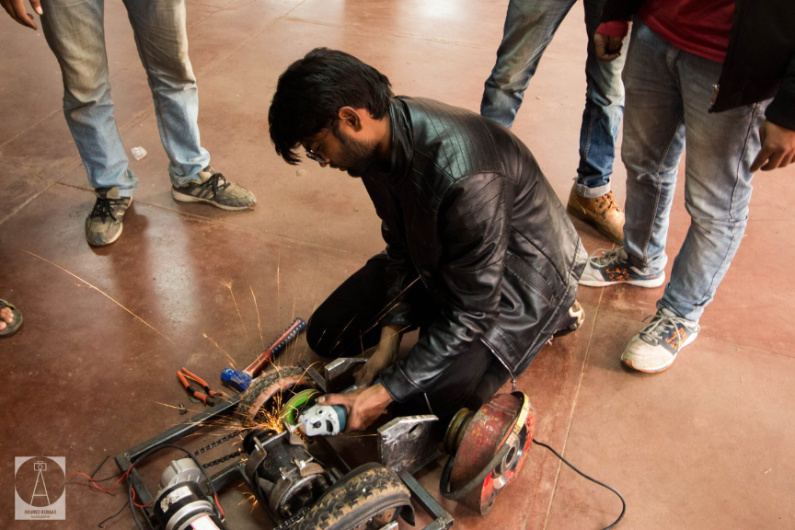

Introduction
About fest
Our Events
Our Sponsors
Contact us
Introduction
Kshitij is the annual techno-management fest of IIT Kharagpur.Started in 2004,
Kshitij was conceived
with the aim to provide the technically inclined youth a
national-level platform,
where their talent and expertise would be recognized
and rewarded.Having grown
exponentially since its nascent years, Kshitij
receives overwhelming participation
from the student community all over the
world.The official website of Kshitij,
ktj.in, is the largest student run website.
The 16th edition of the fest saw an all-over interest of more than 70,000 students
from various technical institutes. And a total of Rs. 55 lacs
offered as prize
money. The Seventeenth release of Kshitij is scheduled from 18th to 20th
January 2020.
Registrations will start soon.
About fest
Kshitij organizes a wide range of events encompassing every genre of technology
and management
with the aim to infuse a scientific and rational temperament in the
young minds.World-renowned
organizations like ACM, IEEE, ASME, ASHRAE
and IMechE certify numerous events of the fest. To address
issues plaguing our
society, Kshitij undertakes social initiatives in association with the foremost NGOs
of the country.Workshops are conducted all over the country to help the participants
gain hand-on experience
and enhance their technical skills. Kshitij also organizes
guest lectures, exhibitions and megashows.While the rivalries
at Kshitij end up being
a definitive trial of coarseness,
information, and aptitude, the addresses by guests and
workshops give an improving knowledge to the enthusiastic students.
The fest has
been graced by the nearness of such illuminating presences who are gazed upward to
for their recognized
commitment in their individual fields.
About some events
-
Laws of Motion: It is a flying aircraft designing and creation event felicitated
by the Institution of
Mechanical Engineers IMechE. It is a standout amongst
the most celebrated events of Kshitij, which gets
interests from students
everywhere throughout the nation
-
Eureka: Paper presentation competition, certified by IEEE.
-
Overnite: The ACM ICPC multi-commonplace programming challenge is
guaranteed by ACM, the world’s biggest
and most renowned logical and
instructive processing society
-
Embetronix: It is an inserted hardware circuit plan rivalry
-
Nightshift: An adjustment of the well known Discovery Channel appear,
Junkyard Wars, this occasion is
additionally ensured by IMechE
-
Clash of Brains: Game Theory based occasion, arranges by The KGPian Game
Theory Society (IIT Kharagpur
section of The Indian Game Theory Society)
-
Relic Hunter: An online treasure hunting game requiring analytical skills to
solve tricky questions to
get to the next clues in the ultimate quest for treasure.
Based on Harry Potter
-
Code-O-Soccer: A simulation-based strategic coding event which provides you
with a perfect platform to
solve a strategy based creative problem using your
coding and strategic
-
Sand Rover: Participants had an opportunity to build up an all-terrain bot
and show their technical
skills, where the wheels are bound to surf over uneven
contours with minimum spillage
of sand in sandrover. In this participant have to
discharge their bots through challenging
Obstacles pushing it to extreme limits
while the clock ticks
-
Robowars: Build a robot and inspire it in the field to battle and win from
different robots
-
Zenith: It is post-war time and the place is all in shambles, with rubble and
trenches all over the place.
You are asked to design the prototype of a bot
that is capable of clearing all these hurdles and reaching the zenith.
-
Crusade: To build an image processing robot that is capable of traversing in a
lane while detecting glowing LEDs on
its way and deciding its path according to
the frequencies of the blinking LEDs

-
Cubiscan: The labyrinth to the National Treasure ain’t easy, and definitely beyond
our scope because it’s entrapped
in debris. Furthermore, the gate to the treasure is
opened only by knowing the correct volume of blocks of specific
physical
characteristics, which perhaps shows skilled ancient architecture. We need to build
up a bot on which this
engulfing task can be assigned
-
Fortress: Build a picture handling robot that can perceive valuable examples by
example acknowledgment while evading
different hindrances
-
Poles apart: Build a physically controlled robot, which is fit for picking and putting
obstructs with exactness and
changing its interaxial separation to make a guide
through a progression of obstacles
-
Stax: To assemble a bot which adjusts squares of various hues while moving over
the stacks utilizing line following.
sponsors
Contact Us
Got any question about KSHITIJ